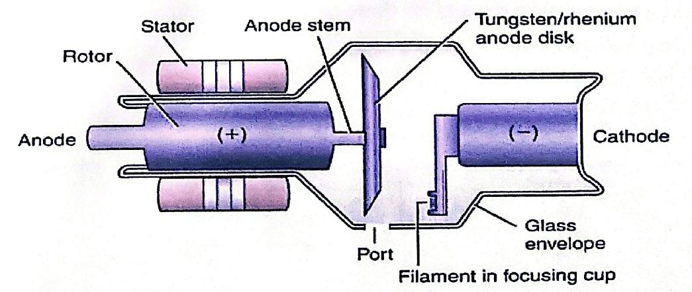
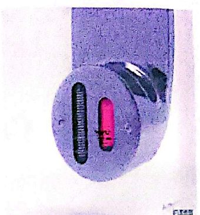
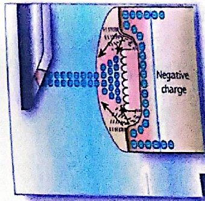
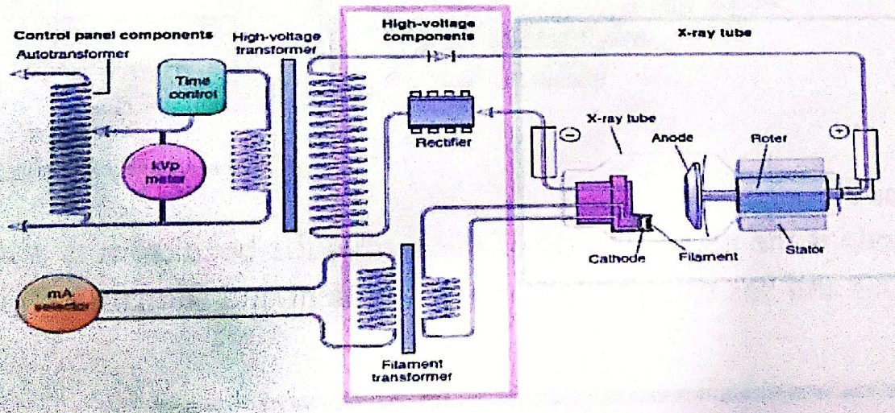
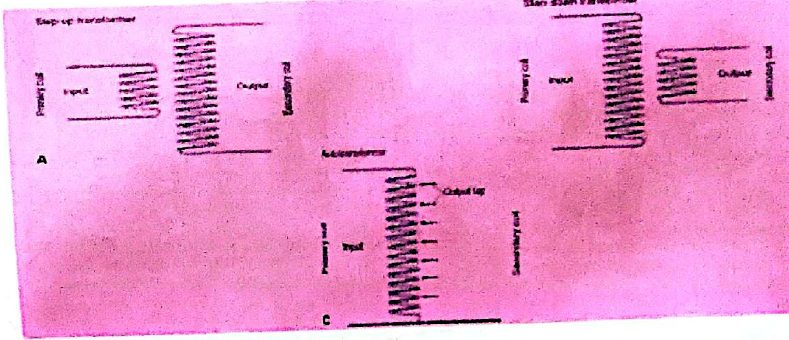
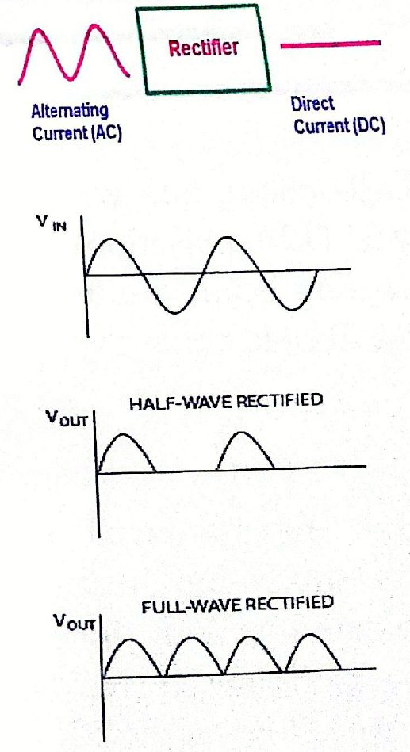
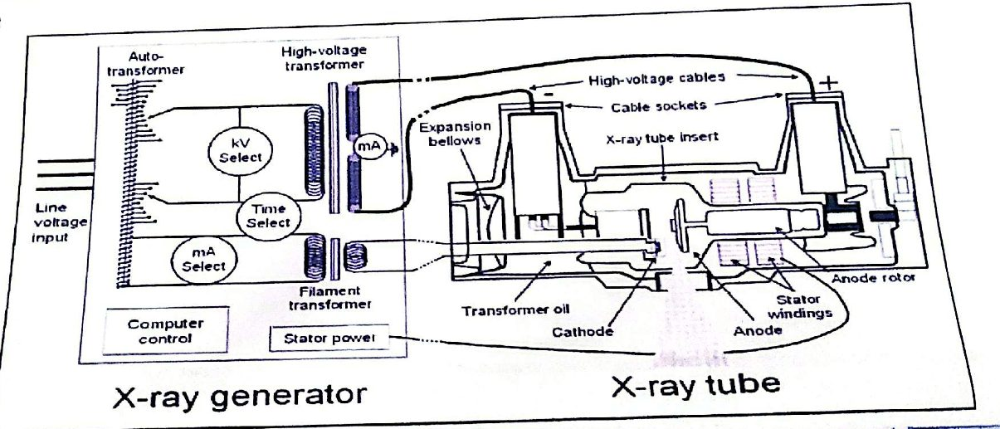
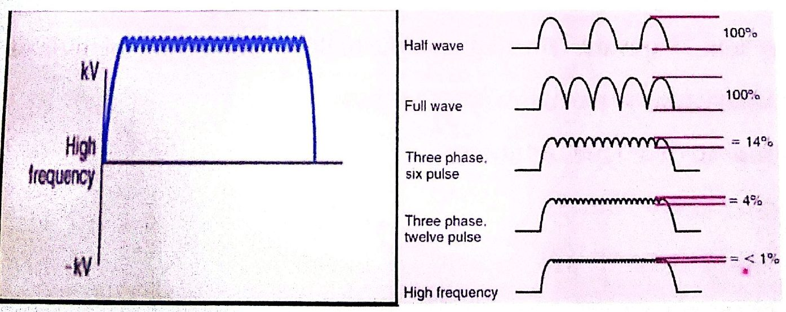
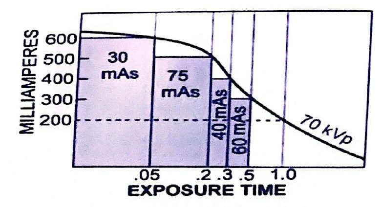
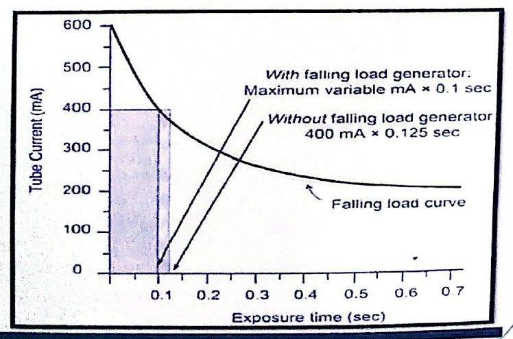

أنبوب الأشعة والمولّدX-ray Tube & Generator
نظري · م02 · 7.6 دقيقةأقسام المحاضرة (9)
- مقدمة: الكاثودIntroduction & Cathode
- الأنود والهدفAnode & Target
- الطاقة الكهربائية ودوائر المولّدElectrical Energy & Generator Circuits
- المحوّلة الكهربائيةTransformer
- المقوّماتRectifiers
- مولّد الأشعة السينيةThe X-ray Generator
- أنواع المولّدات وتموّج الجهدGenerator Types & Voltage Ripple
- زمن التعرّض والمؤقّتاتThe Exposure Time
- مولّد الحمل المتناقصFalling Load Generator
مقدمة: الكاثودIntroduction & Cathode
1- مقدمة1- Introduction
An x-ray tube consists of two electrodes sealed into an evacuated glass envelope.
يتكوّن أنبوب الأشعة السينية من قطبين كهربائيين محكَمي الغلق داخل غلاف زجاجي مفرّغ من الهواء:
- 1. The cathodeالكاثود.
- 2. The anodeالأنود.

1- الكاثود1- Cathode
The cathode is the negative side of the x-ray tube because it is a source of electrons and has two primary parts: filament and focusing cup.
الكاثود هو الجانب السالب من أنبوب الأشعة لأنه مصدر الإلكترونات، وله جزءان أساسيان: الفتيلة (filament) وكأس التركيز (focusing cup).
أ- الفتيلةA- The filament
Is a coil of wire usually about 2 mm in diameter and 1 to 2 cm long. An x – ray filament emit electrons when it heated (occur at about 2200c). When the current through the filament sufficiently intense , 4-10A & voltage of 10V , the outer – shell electrons of the filament atoms are literally boiled off and ejected from the filament. This phenomenon is known as thermionic emission.
هي ملف من سلك قطره عادةً حوالي 2 ملم وطوله 1 إلى 2 سم. فتيلة الأشعة تبعث الإلكترونات عند تسخينها (يحدث ذلك عند حوالي 2200 °م). وعندما يكون التيار المارّ في الفتيلة شديداً بما يكفي، 4–10 أمبير وجهد 10 فولت، «تغلي» إلكترونات المدار الخارجي لذرّات الفتيلة حرفياً وتنطلق منها. وهذه الظاهرة تُسمّى الانبعاث الحراري للإلكترونات (thermionic emission).

ب- كأس التركيزB-The Focusing cup
The focusing cup controls the width of the electron distribution, and directs the electron toward the target.
كأس التركيز يتحكّم في عرض توزيع الإلكترونات، ويوجّه الإلكترونات نحو الهدف.

الأنود والهدفAnode & Target
2- الأنود2- Anode
The anode is the positive side of the x-ray tube, which divided into two types: A-Stationary , B- Rotating
الأنود هو الجانب الموجب من أنبوب الأشعة، وينقسم إلى نوعين: أ- الثابت (stationary)، ب- الدوّار (rotating).
الهدفTarget
The target is the area of the anode struck by the electrons from the cathode.
الهدف هو المنطقة من الأنود التي تصطدم بها الإلكترونات القادمة من الكاثود.
الطاقة الكهربائية ودوائر المولّدElectrical Energy & Generator Circuits
In an X-ray tube, we need electrical energy for two main purposes:
في أنبوب الأشعة السينية نحتاج الطاقة الكهربائية لغرضين رئيسيين:
- 1. To boil the electrons from the filamentلإطلاق («غلي») الإلكترونات من الفتيلة.
- 2. To Accelerate these electrons from cathode to anodeلتسريع هذه الإلكترونات من الكاثود إلى الأنود.
The generator have circuits for these task
وللمولّد دوائر لهذه المهام:
- 1. High Voltage circuitدائرة الجهد العالي.
- 2. Filament circuitدائرة الفتيلة.
- 3. Timer circuitدائرة المؤقّت.

المحوّلة الكهربائيةTransformer
المحوّلةTransformer
Transformer Uses electromagnetic induction to vary voltage
المحوّلة (transformer) تستعمل الحثّ الكهرومغناطيسي لتغيير الجهد.
المحوّلة الأساسيةThe basic Transformer
Consists of an ion core , a primary winding circuits, and secondary winding circuits.
تتكوّن من قلب حديدي، ودوائر لفّ ابتدائية، ودوائر لفّ ثانوية.
أنواع المحوّلاتTypes of Transformer

المقوّماتRectifiers
المقوّماتRectifiers
A rectifier is an electronic device that converts an alternating current (AC) into a direct current (DC) by using one or more P-N junction diodes. A diode behaves as a one-way valve that allows current to flow in a single direction.
المقوّم (rectifier) جهاز إلكتروني يحوّل التيار المتناوب (AC) إلى تيار مستمر (DC) باستعمال صمّام ثنائي واحد أو أكثر من نوع P-N junction. والصمّام الثنائي (diode) يعمل كصمّام باتجاه واحد يسمح للتيار بالمرور في اتجاه واحد فقط.

مولّد الأشعة السينيةThe X-ray Generator
2- مولّد الأشعة السينية2- The x-ray generator
The x-ray generator the power source of the x-ray tube which provides electrical power and signals required for the operation of the x-ray tube.
مولّد الأشعة السينية هو مصدر الطاقة لأنبوب الأشعة، ويوفّر القدرة الكهربائية والإشارات اللازمة لتشغيل الأنبوب.
- 1. It supplies current at a high voltage to the x-ray tube (20 to 150 kV) needed for x ray production.يجهّز تياراً بجهد عالٍ لأنبوب الأشعة (20 إلى 150 kV) لازماً لإنتاج الأشعة السينية.
- 2. The tube voltage is supplied Symmetrically to the tube, i.e. a net potential difference of 150 kV is achieved by feeding -75 kV to the cathode and +75 kV to the anodeيُجهَّز جهد الأنبوب بشكل متماثل، أي يتحقق فرق جهد صافٍ مقداره 150 kV بتغذية الكاثود بـ −75 kV والأنود بـ +75 kV.

أنواع المولّدات وتموّج الجهدGenerator Types & Voltage Ripple
أ- المولّدات أحادية الطورA-Single-Phase Generators :
Single-phase, full-wave rectified generators produce two pulsations per cycle (120 pulsations per second) with 100% voltage ripple. This pulsating beam results in a longer exposure time, and greater patient dose from lower energy soft x-rays.
المولّدات أحادية الطور المقوَّمة موجة كاملة تُنتج نبضتين لكل دورة (120 نبضة في الثانية) مع تموّج جهد 100%. وهذه الحزمة النابضة تؤدّي إلى زمن تعرّض أطول وجرعة أكبر للمريض من الأشعة الليّنة منخفضة الطاقة.
ب- المولّدات ثلاثية الطورB-Three-Phase Generators
The x –ray produced by the signal – phase,. This leads to a little diagnostic value because of their low energy and therefore low penetrability. With three – phase power, multiple voltage waveforms are superimposed on one another, resulting in a waveform that maintains a nearly constant voltage, consequently, the voltage impressed across x – ray tube never dropping to zero during exposure.
الأشعة الناتجة من المولّد أحادي الطور قليلة القيمة التشخيصية بسبب طاقتها المنخفضة وبالتالي قدرتها المنخفضة على الاختراق. أما مع القدرة ثلاثية الطور، فتتراكب عدة أشكال موجية للجهد فوق بعضها، فينتج شكل موجي يحافظ على جهد شبه ثابت، وبالتالي لا يهبط الجهد المسلَّط على أنبوب الأشعة إلى الصفر أبداً أثناء التعرّض.
تموّج الجهدRipple
Ripple, or voltage ripple, refers to the fluctuation in voltage output of some X-ray generators. The voltage ripple of a DC waveform is defined as the difference between the peak voltage and the minimum voltage, divided by the peak voltage and multiplied by 100. It is given a percentage value
التموّج، أو تموّج الجهد (voltage ripple)، يعني التذبذب في الجهد الخارج من بعض مولّدات الأشعة. ويُعرَّف تموّج الجهد لشكل موجي مستمر بأنه الفرق بين ذروة الجهد وأدنى جهد، مقسوماً على ذروة الجهد ومضروباً في 100، ويُعطى قيمة مئوية.
R = (kVp–kVmin) / kVp
معادلة التموّج: R = (kVp − kVmin) / kVp
- 1. Single-phase has 100% ripple.المولّد أحادي الطور تموّجه 100%.
- 2. Three-phase generators have ripple values between 5 and 15%.المولّدات ثلاثية الطور قيم تموّجها بين 5 و15%.
- 3. Modern X-ray generators use high frequency inverters to create an approximate DC waveform, minimizing the ripple effect to less than 1%.مولّدات الأشعة الحديثة تستعمل عواكس عالية التردد لتكوين شكل موجي قريب من التيار المستمر، فتقلّل تأثير التموّج إلى أقل من 1%.
ج- المولّد عالي الترددC- High frequency generator:
The development in high – voltage generator design was using a high – frequency electric circuit to the x – ray tube. Higher frequency would be obtained, consequently, when the voltage waveform are rectified and smoothed it has less than 1 % ripple, which is even better than three – phase power for x – ray Production.
كان التطوّر في تصميم مولّد الجهد العالي هو استعمال دائرة كهربائية عالية التردد لأنبوب الأشعة. فنحصل على تردد أعلى، وبالتالي عندما يُقوَّم الشكل الموجي للجهد ويُنعَّم يكون تموّجه أقل من 1%، وهذا أفضل حتى من القدرة ثلاثية الطور لإنتاج الأشعة السينية.

High-frequency generators are smaller and more efficient than 3-phase generators. also, high-frequency generators is the most widely used over the past decade for the following reasons:
المولّدات عالية التردد أصغر وأكفأ من المولّدات ثلاثية الطور، كما أنها الأكثر استعمالاً خلال العقد الماضي للأسباب الآتية:
- 1. The standard frequency increase from 60 Hz to 500 KHzيزداد التردد القياسي من 60 هيرتز إلى 500 كيلوهيرتز.
- 2. The highest average (effective) x-ray energyأعلى متوسط (فعّال) لطاقة الأشعة السينية.
- 3. lower soft radiation dosage to patientsجرعة أقل من الإشعاع الليّن للمرضى.
- 4. Nearly constant potential waveformشكل موجي للجهد شبه ثابت.
- 5. Smaller in designأصغر في التصميم.
- 6. Increased radiation quality and quantityزيادة نوعية الإشعاع وكميته.
- 7. Shortest exposure time.أقصر زمن تعرّض.
- 8. Increase x-ray tube life.إطالة عمر أنبوب الأشعة.
زمن التعرّض والمؤقّتاتThe Exposure Time
3- زمن التعرّض3- The Exposure Time.
The exposure time controls the length of the x-ray exposure by determining how long the current (mA) will be passing through the x-ray tube. Exposure Timers break the high voltage across the tube on the primary side of the high voltage section.
زمن التعرّض يتحكّم في مدة التعرّض للأشعة بتحديد كم من الوقت سيمرّ التيار (mA) في أنبوب الأشعة. ومؤقّتات التعرّض تقطع الجهد العالي عبر الأنبوب من الجانب الابتدائي لقسم الجهد العالي.
There are five types of timers:
هناك خمسة أنواع من المؤقّتات:
- 1. Mechanical Timersالمؤقّتات الميكانيكية.
- 2. Synchronous Timersالمؤقّتات المتزامنة.
- 3. Electronic Timersالمؤقّتات الإلكترونية.
- 4. mAs Timersمؤقّتات mAs.
- 5. Automatic exposure control timers (AEC) (phototimers)مؤقّتات التحكم التلقائي بالتعرّض (AEC) (المؤقّتات الضوئية).
مولّد الحمل المتناقصFalling Load Generator
4- مولّد الحمل المتناقص4- Falling load generator
The purpose of falling load generator is to produce an x-ray exposure in the shortest possible exposure time by the operating x-ray tube at its maximum kilowatt rating during the entire exposure.
الغرض من مولّد الحمل المتناقص (falling load generator) إنتاج تعرّض بأقصر زمن تعرّض ممكن، بتشغيل أنبوب الأشعة بأقصى قدرته بالكيلوواط طوال مدة التعرّض.
- • Initial setup: The generator begins the exposure with the highest possible mA, based on the x-ray tube's heat-loading potential.البداية: يبدأ المولّد التعرّض بأعلى mA ممكن، حسب قدرة الأنبوب على تحمّل الحمل الحراري.
- • Automatic adjustment: As the tube's anode heats up, the generator automatically reduces the mA to a lower level that the tube can handle.التعديل التلقائي: كلما سخن أنود الأنبوب، يخفّض المولّد mA تلقائياً إلى مستوى أقل يتحمّله الأنبوب.
- • Continuous exposure: The exposure continues with this reduced mA until the total required mAs (milliampere-seconds) is delivered.استمرار التعرّض: يستمر التعرّض بهذا mA المخفَّض حتى يُعطى مجموع mAs المطلوب.
- • Result: This process ensures that the exposure time is kept as short as possible throughout the entire process, providing the shortest possible exposure time to deliver the set mAs.النتيجة: تضمن هذه العملية بقاء زمن التعرّض أقصر ما يمكن طوال العملية، فتعطي أقصر زمن تعرّض ممكن لإيصال mAs المحدَّد.


المحاضرة مسموعة
نص الأستاذ بالإنكليزي مثل الأصل · 7.6 دقيقة. اضغط أي جملة تسمعها، أو مصطلح منقّط تسمع لفظه ومعناه.
Introduction & Cathodeمقدمة: الكاثود
Introduction & Cathode
1- Introduction
An x-ray tube consists of two electrodes sealed into an evacuated glass envelope.
The cathode
The anode
1- Cathode
The cathode is the negative side of the x-ray tube because it is a source of electrons and has two primary parts: filament and focusing cup.
A- The filament
Is a coil of wire usually about 2 mm in diameter and 1 to 2 cm long. An x – ray filament emit electrons when it heated (occur at about 2200c). When the current through the filament sufficiently intense , 4-10A & voltage of 10V , the outer – shell electrons of the filament atoms are literally boiled off and ejected from the filament. This phenomenon is known as thermionic emission.
B-The Focusing cup
The focusing cup controls the width of the electron distribution, and directs the electron toward the target.
Anode & Targetالأنود والهدف
Anode & Target
2- Anode
The anode is the positive side of the x-ray tube, which divided into two types: A-Stationary , B- Rotating
Target
The target is the area of the anode struck by the electrons from the cathode.
Electrical Energy & Generator Circuitsالطاقة الكهربائية ودوائر المولّد
Electrical Energy & Generator Circuits
In an X-ray tube, we need electrical energy for two main purposes:
To boil the electrons from the filament
To Accelerate these electrons from cathode to anode
The generator have circuits for these task
High Voltage circuit
Filament circuit
Timer circuit
Transformerالمحوّلة الكهربائية
Transformer
Transformer
Transformer Uses electromagnetic induction to vary voltage
The basic Transformer
Consists of an ion core , a primary winding circuits, and secondary winding circuits.
Types of Transformer
when a transformer is used to “increase” the voltage on its secondary winding with respect to the primary, it is called a Step-up transformer.
when it is used to “decrease” the voltage on the secondary winding with respect to the primary it is called a Step-down transformer
Rectifiersالمقوّمات
Rectifiers
Rectifiers
A rectifier is an electronic device that converts an alternating current (AC) into a direct current (DC) by using one or more P-N junction diodes. A diode behaves as a one-way valve that allows current to flow in a single direction.
Converts only one half of the AC cycle into DC, resulting in lower efficiency and a less smooth output.
Converts both the positive and negative halves of the AC cycle into DC, providing a smoother and steadier output.
The X-ray Generatorمولّد الأشعة السينية
The X-ray Generator
2- The x-ray generator
The x-ray generator the power source of the x-ray tube which provides electrical power and signals required for the operation of the x-ray tube.
It supplies current at a high voltage to the x-ray tube (20 to 150 kV) needed for x ray production.
The tube voltage is supplied Symmetrically to the tube, i.e. a net potential difference of 150 kV is achieved by feeding -75 kV to the cathode and +75 kV to the anode
Generator Types & Voltage Rippleأنواع المولّدات وتموّج الجهد
Generator Types & Voltage Ripple
A-Single-Phase Generators :
Single-phase, full-wave rectified generators produce two pulsations per cycle (120 pulsations per second) with 100% voltage ripple. This pulsating beam results in a longer exposure time, and greater patient dose from lower energy soft x-rays.
B-Three-Phase Generators
The x –ray produced by the signal – phase,. This leads to a little diagnostic value because of their low energy and therefore low penetrability. With three – phase power, multiple voltage waveforms are superimposed on one another, resulting in a waveform that maintains a nearly constant voltage, consequently, the voltage impressed across x – ray tube never dropping to zero during exposure.
Ripple
Ripple, or voltage ripple, refers to the fluctuation in voltage output of some X-ray generators. The voltage ripple of a DC waveform is defined as the difference between the peak voltage and the minimum voltage, divided by the peak voltage and multiplied by 100. It is given a percentage value
R = (kVp–kVmin) / kVp
Single-phase has 100% ripple.
Three-phase generators have ripple values between 5 and 15%.
Modern X-ray generators use high frequency inverters to create an approximate DC waveform, minimizing the ripple effect to less than 1%.
C- High frequency generator:
The development in high – voltage generator design was using a high – frequency electric circuit to the x – ray tube. Higher frequency would be obtained, consequently, when the voltage waveform are rectified and smoothed it has less than 1 % ripple, which is even better than three – phase power for x – ray Production.
High-frequency generators are smaller and more efficient than 3-phase generators. also, high-frequency generators is the most widely used over the past decade for the following reasons:
The standard frequency increase from 60 Hz to 500 KHz
The highest average (effective) x-ray energy
lower soft radiation dosage to patients
Nearly constant potential waveform
Smaller in design
Increased radiation quality and quantity
Shortest exposure time.
Increase x-ray tube life.
The Exposure Timeزمن التعرّض والمؤقّتات
The Exposure Time
3- The Exposure Time.
The exposure time controls the length of the x-ray exposure by determining how long the current (mA) will be passing through the x-ray tube. Exposure Timers break the high voltage across the tube on the primary side of the high voltage section.
There are five types of timers:
Mechanical Timers
Synchronous Timers
Electronic Timers
mAs Timers
Automatic exposure control timers (AEC) (phototimers)
Falling Load Generatorمولّد الحمل المتناقص
Falling Load Generator
4- Falling load generator
The purpose of falling load generator is to produce an x-ray exposure in the shortest possible exposure time by the operating x-ray tube at its maximum kilowatt rating during the entire exposure.
Initial setup: The generator begins the exposure with the highest possible mA, based on the x-ray tube's heat-loading potential.
Automatic adjustment: As the tube's anode heats up, the generator automatically reduces the mA to a lower level that the tube can handle.
Continuous exposure: The exposure continues with this reduced mA until the total required mAs (milliampere-seconds) is delivered.
Result: This process ensures that the exposure time is kept as short as possible throughout the entire process, providing the shortest possible exposure time to deliver the set mAs.
24 سؤال من نص المحاضرة، ويّا «ليش صح» بعد كل جواب.
ابدأ الاختباراضغط أي مصطلح منقّط تسمع لفظه ومعناه.
PDF ثنائي اللغة: نص الأستاذ + الترجمة + الخلاصة + الأسئلة · 1.4 MB
تحميل الملف